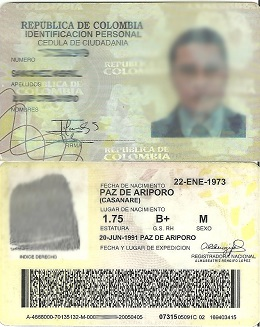
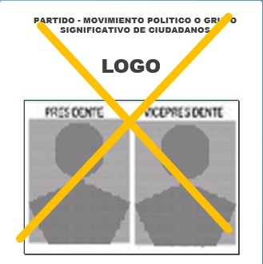
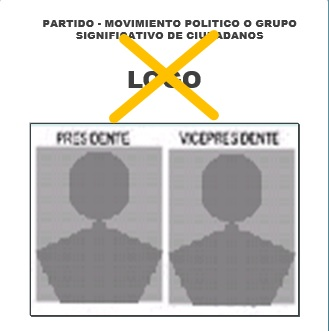
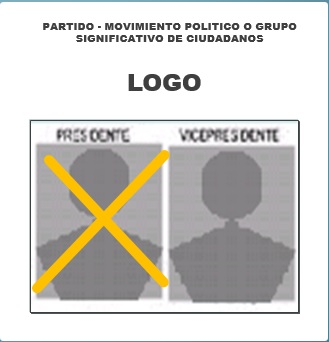
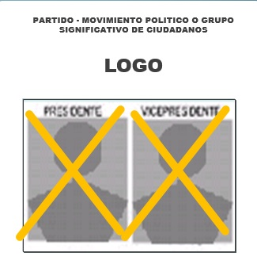
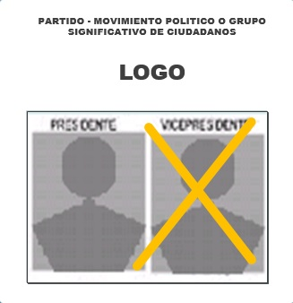
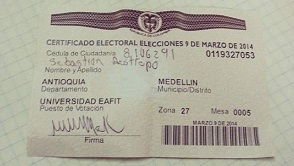

¿Como Votar?
Saber cómo votar, es tal vez, lo más importante. A continuación, te invitamos a que veas los instructivos y videos que hemos subido en esta sección para así estar más instruidos sobre este proceso:
Instructivo para realizar el proceso de votación:
1. Saber el puesto de votación: esta información la podemos consultar en la página de la Registraduría nacional del estado civil. Si usted desea consultar su puesto de votación, por favor de click Aquí.
2. Acudir con la cedula amarilla con holograma al puesto de identificación biométrica.

3. Acudir con la cedula amarilla con holograma y el certificado de identificación biométrica al puesto de votacion.
4. El jurado entregara la tarjeta electoral correspondiente a presidente y vicepresidente.
5. Marcar claramente la opción de su preferencia y depositar la tarjeta en la urna correspondiente al puesto de votación.
• Formas validas de marcar el tarjetón:
Cuando el Elector con una marca define claramente la fórmula de su preferencia:

Cuando el Elector marca claramente el logo símbolo del partido de su preferencia.

Cuando el Elector con una marca define claramente la fórmula de su preferencia.

Cuando el Elector utiliza más de una marca, dentro de la misma formula Presidencial.

Cuando el Elector con una marca define claramente la fórmula de su preferencia

Cuando el elector marca únicamente la casilla de voto en blanco.
6. Reclamar el certificado electoral.

Video tutorial sobre como ejercer nuestro derecho:
http://www.youtube.com/watch?v=_8cWBRhaRuc
Video tutorial ilustrando los 5 pasos para ejercer nuestro derecho en estas votaciones:
http://www.youtube.com/watch?v=Fwf-6Ly7N9Ahttp://www.youtube.com/watch?v=Fwf-6Ly7N9A